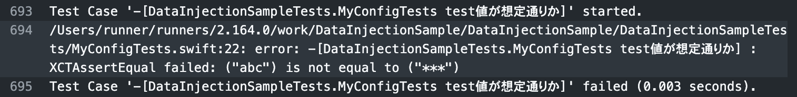

Github ActionsでiOSアプリに値を埋め込む
前回 、iOSプロジェクトに対してcocoapods-keysで値を入れて、さらにそれをBitriseからも注入できるようにしました。別のチームの場合だとBitriseではなくGithub Actionsで実現しているところもあって、そちらのやり方もまた気になったので試してみます。
コードは前回のを使いまわします。
https://github.com/michi1129/DataInjectionSample
cocoapods-keysから値を入れるところも済んでいるものとします。なので残すはGithub Actionsの部分だけです。
まずはローカルで実行してみる
コマンドラインからビルドできるように準備する
starterのciの中 とか、その中の swift.yml とかを見る限りでは、実行するコマンドがそのまま書かれているだけっぽいので、コマンドラインからテストを実行する方法を探しにいきます。
Building from the Command Line with Xcode FAQ を見たりしつついろいろ試してみたところ、以下のようなコマンドで実行することができました。
# ビルド
# xcodebuild build -workspace "GithubActionsSample.xcworkspace" -scheme GithubActionsSample -destination "platform=iOS Simulator,name=iPhone 11"
# テスト
$ xcodebuild test -workspace "GithubActionsSample.xcworkspace" -scheme GithubActionsSample -destination "platform=iOS Simulator,name=iPhone 11"
...
** TEST SUCCEEDED **
有効なdestinationの値についてはXcodeでOrganizerに表示されるものということですが、適当な値(例えば -destination "platform=iOS Simulator" など)を使って実行するとエラーメッセージ中に一覧表示されるのでそれをコピペした方が早いかもしれません。
# 抜粋
Available destinations for the "DataInjectionSample" scheme:
{ platform:iOS Simulator, id:65B718C7-139F-4C89-BCC3-EA92976F359C, OS:13.3, name:iPhone 8 }
{ platform:iOS Simulator, id:9EE345DA-577B-4C6A-982D-6492261EAA42, OS:13.3, name:iPhone 11 }
platform、nameなどの項目の間のカンマによかれと思ってスペースを挟みがちですが、それだとエラーが起きるため、つめて書く必要がありました。
Github Actionsにワークフローを登録する
yamlファイルに実行するコマンドを書いていきます。いくつかテンプレートが登録されていますがxcodebuildのものは見当たらないので、スケルトンから作ってみることにしました。
そこにターミナルのhistoryから拾って貼り付ければ、特に問題なくビルドできます。
Bitriseのときと同様に、普通に書くとビルドログで値が見えてしまうので、Secretsを使って非表示にします。
再度ワークフローを実行して、テストを失敗させてみても、ログの出力では伏せられていることが確認できました。

最終形はこのようになりました。
https://github.com/michi1129/DataInjectionSample/blob/dev-workflow/.github/workflows/xcode-build.yml
まとめ
Github Actionsは、ここで見た内容程度であれば、コマンドを実行するだけですし、ターミナルで作業ができれば問題なく使いこなせそうに思います。
xcodebuildのコマンドラインオプションの方が難しいと感じました。